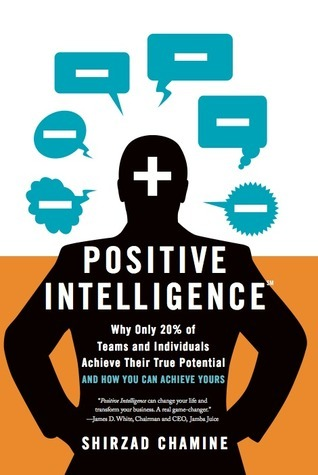

Positive Intelligence
⭐️⭐️⭐️⭐️⭐️
My mind just keeps going back to this book, and the things it teaches and reinforces. It's one of those books I wanted to talk about with everybody around me while I was reading it. In short, we all have mental saboteurs, which we have potentially (and unintentionally) let play too significant of a role in our thinking, outlook, reactions, etc. We can identify those saboteurs within ourselves, counteract them, and find more meaning and success.
The author, Shirzad Chamine, doesn't claim this is original material, but a collection of things utilized by others. Probably due to my familiarity with those other areas, Chamine's approach rang really true with me. I can't claim to have turned my life around due to this book, but on I can attest that another book has been my "short list" of self-help and business books I'd actually recommend.
- Previously: Redwall
- Next: How to Be Human